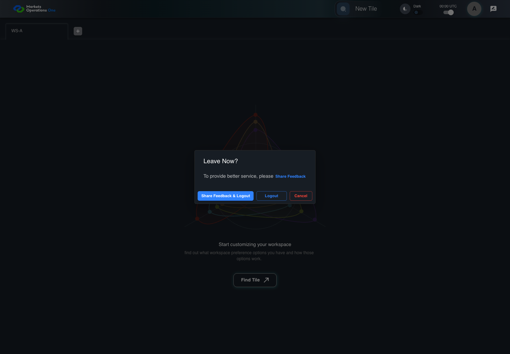
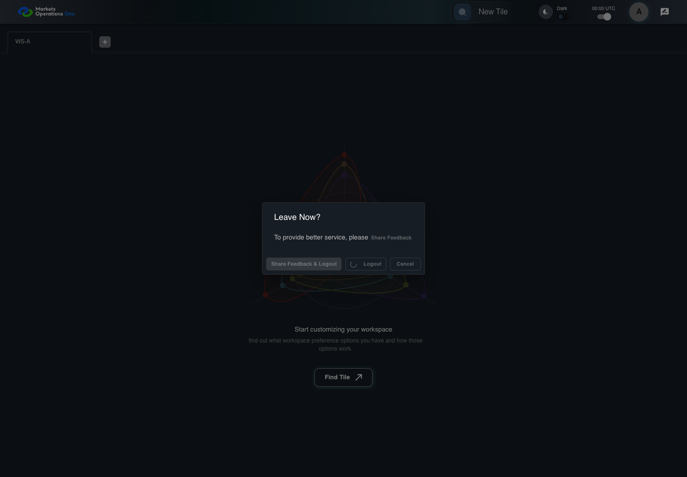

AUTH-109 logout transport failure keeps local logout
PASS · application/run-050/auth-109-logout-transport-failure-keeps-local-logout-3334704de6c3-attempt-1 · ACTUAL_APPLICATION_LOCAL_SERVICES
Actual MFE; controlled API responses, clock, visibility and suspension adapters. Unsigned browser-only credentials. No natural lifecycle, real identity or service policy acceptance.
2026-10-22T06:06:33.592Z to 2026-10-22T06:06:37.893Z
Assertions and result · Artifact manifest · Exact run inputs and source hashes
Result SHA-256:b6da60ecf216ed91ee025543615925f4af0892679e32510c4ee656f36ec27563Machine observations
- session-fixture.json
7e963ee3dace48c5fdab552ac124d827c34461053f6a3c1ad723b6fb04e19ab4 - session-observations.json
7896690d42b9aa06e134b2f9e45a569b640e60cda83e26ebec3f6c99f3b0c8a5
Screenshot capture: CAPTURED. Named frames: 13.
Step screenshot bindings: COMPLETE. 12/12 canonical steps have execution screenshots.
Bindings measure structural coverage only. They do not establish screenshot content quality or relevance.
Screenshot content review: NOT_REVIEWED. Recorded context: 0/13 frames. Identical image bytes: 8 repeated frames. Recorded context does not establish human visual review.
Canonical step timeline
Given User A is authenticated as user-a in an isolated browser context
Execution: PASSED.1. step-01 Visible state after step 1: Given User A is authenticated as user-a in an isolated browser context
2026-10-22T06:06:35.101Z · 1440×1000
Step: /Users/lushevol/code/github/ratan-release-impact/workbench/tasks/ui-test-coverage-20261022/test-cases.md:4123
SHA-256:c95d343b87c2edfbce6043cbde9ee250459754f323ec6689c258f69b1421624fAnd the selected fixture tab is labelled "WS-A" inside the tablist named "workspaces" on the Home page
Execution: PASSED.
2. step-02 Visible state after step 2: And the selected fixture tab is labelled "WS-A" inside the tablist named "workspaces" on the Home page
2026-10-22T06:06:35.183Z · 1440×1000
Step: /Users/lushevol/code/github/ratan-release-impact/workbench/tasks/ui-test-coverage-20261022/test-cases.md:4124
SHA-256:c95d343b87c2edfbce6043cbde9ee250459754f323ec6689c258f69b1421624fImage bytes match frame 1. An unchanged image can be valid for consecutive assertions. This match does not establish correct step content.
And the dialog named "Leave Now?" on the Home page is visible
Execution: PASSED.
3. step-03 Visible state after step 3: And the dialog named "Leave Now?" on the Home page is visible
2026-10-22T06:06:35.371Z · 1440×1000
Step: /Users/lushevol/code/github/ratan-release-impact/workbench/tasks/ui-test-coverage-20261022/test-cases.md:4125
SHA-256:78f6c4305a3be966b038a5de11a155a6448587cd15e3f8a4ec5cdf203346f4b3And both logout requests fail
Execution: PASSED.
4. step-04 Visible state after step 4: And both logout requests fail
2026-10-22T06:06:35.440Z · 1440×1000
Step: /Users/lushevol/code/github/ratan-release-impact/workbench/tasks/ui-test-coverage-20261022/test-cases.md:4126
SHA-256:78f6c4305a3be966b038a5de11a155a6448587cd15e3f8a4ec5cdf203346f4b3Image bytes match frame 3. An unchanged image can be valid for consecutive assertions. This match does not establish correct step content.
When User A clicks the button labelled "Logout" inside the dialog named "Leave Now?" on the Home page
Execution: PASSED.
5. step-05 Visible state after step 5: When User A clicks the button labelled "Logout" inside the dialog named "Leave Now?" on the Home page
2026-10-22T06:06:35.577Z · 1440×1000
Step: /Users/lushevol/code/github/ratan-release-impact/workbench/tasks/ui-test-coverage-20261022/test-cases.md:4127
SHA-256:12aca8324a79c7feb0a7f0356347831ab04287bbd547800e64228d77b22a7ad0And the controlled browser clock advances through the 1000-millisecond logout delay
Execution: PASSED.
6. step-06 Visible state after step 6: And the controlled browser clock advances through the 1000-millisecond logout delay
2026-10-22T06:06:35.905Z · 1440×1000
Step: /Users/lushevol/code/github/ratan-release-impact/workbench/tasks/ui-test-coverage-20261022/test-cases.md:4128
SHA-256:59c4e063cab140c3f713f0512ac90aebc5ae2dd3932cddd7e50e5f5f00d57386Then the textbox with placeholder "Enter Username" on the login page is visible
Execution: PASSED.
7. step-07 Visible state after step 7: Then the textbox with placeholder "Enter Username" on the login page is visible
2026-10-22T06:06:36.142Z · 1440×1000
Step: /Users/lushevol/code/github/ratan-release-impact/workbench/tasks/ui-test-coverage-20261022/test-cases.md:4129
SHA-256:99567bb3808af958792a6b38879d848938c08b417fb7dfff75bde75fcbd51a3aAnd the text input with placeholder "Enter Password" on the login page is visible
Execution: PASSED.
8. step-08 Visible state after step 8: And the text input with placeholder "Enter Password" on the login page is visible
2026-10-22T06:06:36.401Z · 1440×1000
Step: /Users/lushevol/code/github/ratan-release-impact/workbench/tasks/ui-test-coverage-20261022/test-cases.md:4130
SHA-256:99567bb3808af958792a6b38879d848938c08b417fb7dfff75bde75fcbd51a3aImage bytes match frame 7. An unchanged image can be valid for consecutive assertions. This match does not establish correct step content.
And the button labelled "Sign In" on the login page is visible
Execution: PASSED.
9. step-09 Visible state after step 9: And the button labelled "Sign In" on the login page is visible
2026-10-22T06:06:36.634Z · 1440×1000
Step: /Users/lushevol/code/github/ratan-release-impact/workbench/tasks/ui-test-coverage-20261022/test-cases.md:4131
SHA-256:99567bb3808af958792a6b38879d848938c08b417fb7dfff75bde75fcbd51a3aImage bytes match frame 8. An unchanged image can be valid for consecutive assertions. This match does not establish correct step content.
And the tablist named "workspaces" on the Home page is absent
Execution: PASSED.
10. step-10 Visible state after step 10: And the tablist named "workspaces" on the Home page is absent
2026-10-22T06:06:36.854Z · 1440×1000
Step: /Users/lushevol/code/github/ratan-release-impact/workbench/tasks/ui-test-coverage-20261022/test-cases.md:4132
SHA-256:99567bb3808af958792a6b38879d848938c08b417fb7dfff75bde75fcbd51a3aImage bytes match frame 9. An unchanged image can be valid for consecutive assertions. This match does not establish correct step content.
And the installed access credential is absent
Execution: PASSED.
11. step-11 Visible state after step 11: And the installed access credential is absent
2026-10-22T06:06:37.055Z · 1440×1000
Step: /Users/lushevol/code/github/ratan-release-impact/workbench/tasks/ui-test-coverage-20261022/test-cases.md:4133
SHA-256:99567bb3808af958792a6b38879d848938c08b417fb7dfff75bde75fcbd51a3aImage bytes match frame 10. An unchanged image can be valid for consecutive assertions. This match does not establish correct step content.
And the portal notification area contains no logout transport error alert
Execution: PASSED.
12. step-12 Visible state after step 12: And the portal notification area contains no logout transport error alert
2026-10-22T06:06:37.214Z · 1440×1000
Step: /Users/lushevol/code/github/ratan-release-impact/workbench/tasks/ui-test-coverage-20261022/test-cases.md:4134
SHA-256:99567bb3808af958792a6b38879d848938c08b417fb7dfff75bde75fcbd51a3aImage bytes match frame 11. An unchanged image can be valid for consecutive assertions. This match does not establish correct step content.
Additional named frames

The final visible state after the named test assertions.
2026-10-22T06:06:37.535Z · 1440×1000Step: Test source: /Users/lushevol/code/github/ratan-release-impact/workbench/e2e/audit-specs/auth-session-expanded.spec.ts:259
SHA-256:
99567bb3808af958792a6b38879d848938c08b417fb7dfff75bde75fcbd51a3aImage bytes match frame 12. An unchanged image can be valid for consecutive assertions. This match does not establish correct step content.
Screenshots establish visible state only. Assertions and traces support functional claims.